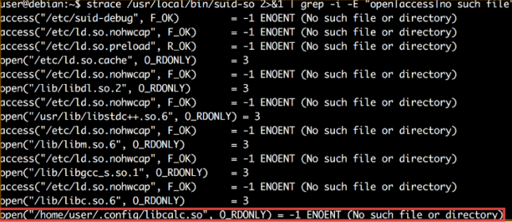

Shared Object files (.so) can be seen as the Unix implementation of Windows DLL files
Contain reusable routines
Expose functions (symbols) via exports table
Loaded within the context of an existing process
Linking methods
Implicit linking
Explicit linking
